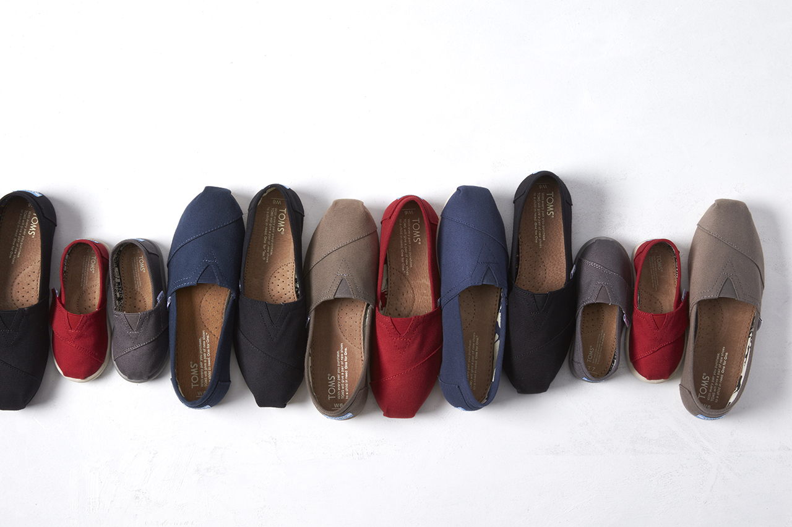
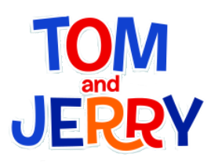

홈 > 브랜드 매거진 > 탐스
탐스
탐스는 제품 구매를 개인의 선의와 연결한 참여형 브랜드다. 신발은 상품이지만, 브랜드의 차별성은 소비자가 구매 행위를 통해 사회적 의미에 참여한다고 느끼게 만든 구조에 있다.
산업 분야 여행·호스피탈리티 · 공개 등급 편집 검수 · 브랜드 평가 4.7 ★

TO
탐스
한눈에 보는 브랜드
탐스는 제품 구매를 개인의 선의와 연결한 참여형 브랜드다. 신발은 상품이지만, 브랜드의 차별성은 소비자가 구매 행위를 통해 사회적 의미에 참여한다고 느끼게 만든 구조에 있다.
브랜드 관점
탐스는 제품 구매를 개인의 선의와 연결한 참여형 브랜드다. 신발은 상품이지만, 브랜드의 차별성은 소비자가 구매 행위를 통해 사회적 의미에 참여한다고 느끼게 만든 구조에 있다.
시작과 성장
2006년 블레이크 마이코스키는 신발이 없는 아르헨티나 아이들을 돕기 위해 탐스를 설립했다. 한 켤레를 팔 때마다 한 켤레를 기부하자는 단순한 아이디어에서 시작된 탐스는 고객들의 열광적인 반응에 힘입어 단기간에 글로벌 브랜드로 성장했다.
브랜드 아이덴티티
탐스는 '사업을 통해 사람들의 삶을 향상시키고 개선한다'는 미션을 가지고 있다. 현재 탐스는 고객의 상품 구매를 통해, 100개 이상의 Giving Partner와 전 세계 70개 이상의 국가에서 신발과 시력, 깨끗한 물을 기부하며 안전한 출산을 위해 돕고 있다.
제품과 서비스
대표 제품과 서비스 정보는 편집 검수 후 공개됩니다.
현재 상태
타임라인
BI/CI 변천사

BI/CI 아카이브대표 브랜드 마크